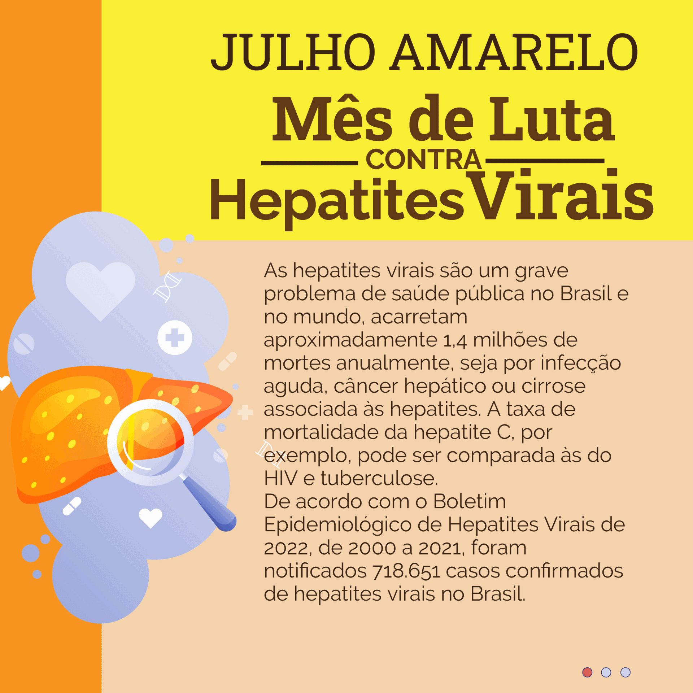

Ensino
Calendário Acadêmico Esconder quadro
| Dom | Seg | Ter | Qua | Qui | Sex | Sab |
|---|---|---|---|---|---|---|
| 1 | 2 | 3 | 4 | |||
| 5 | 6 | 7 | 8 | 9 | 10 | 11 |
| 12 | 13 | 14 | 15 | 16 | 17 | 18 |
| 19 | 20 | 21 | 22 | 23 | 24 | 25 |
| 26 | 27 | 28 | 29 | 30 | 31 |
- De 30/7 a 15/12: 1ª Etapa
- De 30/7 a 28/9: Período para Trancamento
Central de Serviços
Serviço Social
Julho amarelo Esconder quadro

Processos Eletrônicos
Calendário de Eventos Esconder quadro
| Dom | Seg | Ter | Qua | Qui | Sex | Sab |
|---|---|---|---|---|---|---|
| 1 | 2 | 3 | 4 | |||
| 5 | 6 | 7 | 8 | 9 | 10 | 11 |
| 12 | 13 | 14 | 15 | 16 | 17 | 18 |
| 19 | 20 | 21 | 22 | 23 | 24 | 25 |
| 26 | 27 | 28 | 29 | 30 | 31 |
- De 1/7 a 11/12: Projeto de extensão: Jornal escolar do Ensino Médio em Ilha Solteira: Uma Arara me Contou
- De 2/2 a 8/7: Oficina Estudo e construção do currículo de computação do município de Araçatuba sob a perspectiva da aprendizagem baseada em projetos
- De 3/3 a 15/12: Grupo de Estudos e Pesquisas - Laboratório de Política e Gestão da Educação Especial (LPGEEs)
- De 23/3 a 6/7: Auxiliar de Serviços Diversos - Cubatão
- De 1/4 a 31/10: Comissão Organizadora da 23ª Semana Nacional de Ciência e Tecnologia do IFSP Campus Catanduva
- De 11/4 a 5/7: curso de Libras (básico)
- De 9/5 a 3/10: Literatura nos Vestibulares: UNICAMP 2027
- De 14/5 a 2/7: English Club
- De 14/5 a 1/7: Práticas de conversação em Libras
- De 16/5 a 10/10: Literatura nos Vestibulares: FUVEST 2027
- De 19/5 a 24/11: CultivaMaker – Automação de Hortas Inteligentes como Metodologia Maker
- De 21/5 a 2/7: Curso de Manejo de Estresse Breve
- De 22/5 a 27/11: CultivaMaker – Automação de Hortas Inteligentes como Metodologia Maker
- De 5/6 a 3/7: Dançando a filosofia dos Florais de Bach
- De 22/6 a 22/8: Concurso Estadual Paulista promovido pela FFABESP
- De 30/6 a 3/7: Diversidade, Inclusão e Educação Antirracista: Reflexões e Práticas para uma Escola Mais Equitativa
- Dia 1: Cine debate: Medida Provisória - a questão racial no Brasil
- Dia 1: Ideias não Bastam: Como a IA e o Design Thinking Separarão Criadores de Seguidores
- Dia 1: Curso de Iniciação a Prática do Pebolim
- Dia 1: Da diversidade biológica à sociobiodiversidade.
- Dia 1: Visita Técnica - Estação Verde
- Dia 1: I Mostra de Pesquisa do Curso de Engenharia de Produção
- Dia 1: 7ª Visita dos estudantes do Ensino Fundamental da EJA do CEMUS I ao IFSP Campus Salto.
- Dia 1: III SIMCADS | Bancas de TCC do Curso de ADS (01/07/2026)
- Dia 1: Vivência de Dança Circular, com Cida Nogueira